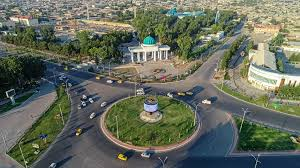
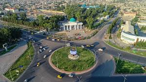

O'zbekistan Respublikasi |
|
| Andijon viloyati |
O'zbekiston Respublikasi
|
| Buxoro viloyati | |
| Farg'ona viloyati | |
| Jizzax viloyati | |
| Namangan viloyati | |
| Navoiy viloyati | |
| Qashqadaryo viloyati | |
| Qoraqalpog'iston Respublikasi | |
| Samarqand viloyati | |
| Sirdaryo viloyati | |
| Surxondaryo viloyati | |
| Toshkent shahri | |
| Toshkent viloyati | |
| Xorazm viloyati | |
Andijon viloyati — Oʻzbekiston Respublikasi tarkibidagi viloyat [2]. Fargʻona vodiysining sharqiy qismida joylashgan. 1941-yil 6-martda tashkil etilgan. Maydoni 4,3 ming km². Aholisi 3 394 400 kishi (2024-yil 1-yanvar holatiga). Andijon viloyatida 2 ta viloyatga bo‘ysinuvchi shahar, 14 tuman, 11 ta tumanga bo‘ysinuvchi shaharlar, 79 ta shaharchalar, 455 ta Qishloq aholi punktlari bor (2024 yil holatiga). Markazi — Andijon shahri. Tarixi Viloyat 1941-yil 6-martda SSSR Oliy Soveti Prezidiumining farmoni bilan Fargʻona viloyatidan ajralib chiqib, Oʻzbekiston SSR tarkibida tashkil etilgan. Bu hududda avval, 1926—1930-yillarda O‘zbekiston SSRning Andijon okrugi tashkil etilgan. Dastlab viloyat tarkibiga Oyim, Oltinkoʻl tumani, Andijon, Baliqchi, Voroshilov, Jalaquduq, Izboskan, Lenin, Marhamat, [Paxtaobod, Stalin, Xoʻjaobod tumanlari hamda viloyatga qarashli Andijon va Leninsk shaharlari kirgan. 1943-yilda Xoldevonbek, Chinobod tumanlari, 1950-yilda Boʻz tumani, 1953-yilda Buloqboshi, Qoʻrgʻontepa, Moskva tumanlari tashkil etilgan. 1959-yilda Moskva viloyati tugatildi. 1960-yilda tugatilgan Namangan viloyati tarkibidan Namangan, Norin, Uychi, Uchqo‘rg‘on, Yangiqo‘rg‘on tumanlari hamda Namangan viloyatiga bo‘ysunuvchi shahar Andijon viloyati tarkibiga o‘tkazilgan. 1961-yilda Voroshilov tumani Ilyichevsk, Stalinsk esa Moskva deb o'zgartirilgan. Kosonsoy, Toʻraqoʻrgʻon va Chust tumanlari Fargʻona viloyatidan Andijon viloyatiga oʻtkazilgan. 1962 yil dekabr oyida Aim, Oltinkoʻl, Bo'z, Buloqboshi, Jalaquduq, Ilyichevsk, Kosonsoy, Lenin, Norin, Paxtaobod, Toʻraqoʻrgʻon, Uychi, Xaldivonbek va Chinobod tumanlari tugatilgan. 1964-yilda Boʻz va Zadaryo tumanlari tashkil etilgan.1965-yilda Marhamat tumani Lenin tumani deb nomlangan. 1967-yilda Uychi tumani tashkil topgan. Oʻsha yili Zadaryo, Namangan, Uychi, Uchqoʻrgʻon, Chust, Yaniqoʻrgʻon tumanlari hamda Namangan shahri qayta tiklangan Namangan viloyatiga oʻtkazilgan. 1970-yilda Marhamat, Paxtaobod tumanlari, 1973-yilda Jalaquduq va Komsomolobod, 1978-yilda Oltinko‘l tumanlari tashkil etilgan. 1972-yilda Sovetobod tumanga, 1994-yilda esa Shahrixonga viloyatga bo'ysunuvchi shahar maqomini olgan. 1992-yilda Buloqboshi tumani tashkil etilgan.

 
